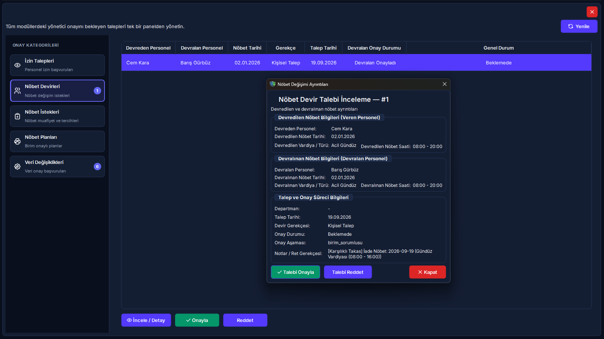
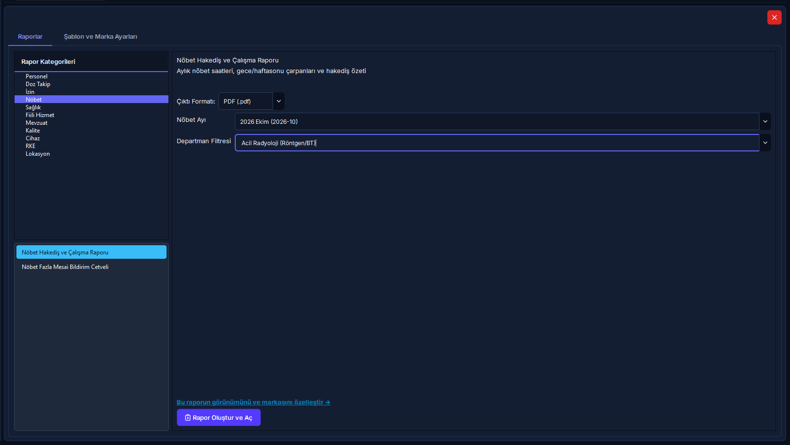

21. Merkezi Onay Bekleyen Görevler Paneli & Kurumsal Rapor Merkezi
Tüm klinik ve idari birimlerden gelen personel izinlerini, nöbet takas/devirlerini, aylık nöbet tercihlerini, resmi nöbet çizelgesi yayınlarını ve 4-göz veri değişiklik taleplerini tek merkezden yönetin; kurumsal antetli Word, Excel ve PDF resmi raporlarını tek tıkla üretin.
Vizyonder Hızlı Karar Reçetesi (Amir & Yönetici Özeti)
5N1K Kural ve Ayar Çözümleme Tablosu
RADPYS-M21-RULE-MATRIX| NE (İşlem / Alan) | NEDEN (Gerekçe) | NEREDE (Arayüz Yolu) | NASIL (Yöntem) | NE ZAMAN (Zamanlama) | KİM (Rol / Yetki) | DURUM (Sistem Tepkisi) |
|---|---|---|---|---|---|---|
| İzin Onayı / Reddi | Yıllık, şua ve mazeret iznini resmiyete bağlamak | Onay Paneli → İzin Talepleri | Onayla Butonu / Reddet Butonu (Zorunlu Gerekçe) | İzin başlangıcından önce | Birim Amiri / Yönetici | Bakiye anında düşer, portalda bildirim kutusuna düşer |
| Nöbet Devir İnceleme & Onay | Personeller arası nöbet takasını resmi çizelgeye yansıtmak | Onay Paneli → Nöbet Devirleri | İncele / Detay Butonu → Karar Formu | Devralan personelin portal rızasından sonra | Birim / Hizmet Sorumlusu | Çizelgedeki personel adı otomatik güncellenir |
| Nöbet İstek & Mazeret | Personelin aylık tercih ve muafiyetlerini kısıt olarak bağlamak | Onay Paneli → Nöbet İstekleri | Onayla / Reddet Butonu | Solver motoru çalıştırılmadan önce | Başteknisyen / Yönetici | Otomatik çizelge motoruna bağlayıcı kural olarak girer |
| Nöbet Planı Yayınlama | Birim onaylı aylık taslak çizelgeyi resmi yürürlüğe sokmak | Onay Paneli → Nöbet Planları | Yayınla Butonu / Taslağa Geri Gönder Butonu | Ay bitmeden ve nöbet başlamadan önce | İdare / Başhekimlik / Admin | Plan "Yayında" olur, portalda tüm personele açılır |
| Veri Değişiklik Kıyaslama (Diff) | 4-göz ilkesiyle hatalı veya yetkisiz veri girişlerini engellemek | Onay Paneli → Veri Değişiklikleri | İncele ve Karar Ver Butonu (Diff Penceresi) | Kritik profil/evrak/kart kaydedildiğinde | Modül Sorumlusu / Yönetici | Eski-yeni farkı onaylanır, evrak KVKK kasasına aktarılır |
| Sağlık Muayene Teyidi | İşe giriş ve periyodik muayene bulgularını hekimce doğrulamak | Onay Paneli → Veri Değişiklikleri | İncele Butonu → Hekim Doğrulama Formu | Sağlık muayenesi talep kuyruğuna düştüğünde | RKS / İşyeri Hekimi | Hızlı onay engellenir; Dahiliye/Göz/Derm bulguları zorunludur |
| Resmi Rapor Üretimi | SKS 6.1 ve NDK denetimleri veya kurum içi analizler için belge almak | Rapor Merkezi → Raporlar Sekmesi | Rapor Seç → Filtrele → "Rapor Oluştur ve Aç" | Periyodik denetim veya yönetim taleplerinde | Raporlar Okuma Yetkilisi | Word, Excel veya PDF formatında diskte üretilir ve açılır |
| Şablon ve Marka Ayarı | Kurum başlıklarını ve resmi çift logoyu antetli belgelere giydirmek | Rapor Merkezi → Şablon Ayarları | Logo Seç → Başlık Gir → Word Şablonu Güncelle | Kurum logosu veya başlığı değiştiğinde | Sistem Yöneticisi / Admin | Tüm docxtpl Word raporlarına otomatik yansır |
Mit Avcısı: Onay & Rapor Yönetiminde Yanlış Bilinen Doğrular
RADPYS-MYTH-BUSTER"Veri Değişiklikleri tablosunda 'Hızlı Onayla' butonuna basarak tüm talepleri, hekim muayeneleri dahil tek tıkla onaylayabilirim."
Sağlık muayenesi kayıtlarında sistem "Hızlı Onayla"yı güvenlik gereği bloklar ve zorunlu olarak uzman hekim inceleme formunu açar. Dahiliye, göz ve dermatoloji bulguları doğrulanmadan sağlık onayı verilemez.
"İzin veya nöbet devrini reddederken gerekçe yazmak isteğe bağlıdır; boş bırakıp geçebilirim."
Sistem tüm ret eylemlerinde zorunlu olarak metin girişi ister. Ret gerekçesi girilmeden ret işlemi tamamlanamaz ve bu gerekçe personelin web portalındaki bildirim paneline anında iletilir.
"Kurum ayarlarında çift logo tanımlı değilse Word (.docx) raporları hata verip kilitlenir."
Rapor motoru kurumda tek logo yüklüyse sadece mevcut logoyu basar; hiç logo tanımlanmamışsa şablon logoları atlayarak metin bütünlüğünü korur ve hatasız antetli döküm üretir.
"Resmi antetli Word ve PDF raporlarını Web Portal üzerinden de oluşturabilirim."
Antetli matbu Word (.docx), PDF ve Excel rapor merkezi yalnızca Masaüstü İstemcisi üzerinde çalışır. Web portalda ise personelin bireysel başvuru ekranları ve etkileşimli canlı analiz panoları yer alır.
Merkezi Onay ve Raporlama Uçtan Uca Süreç Akışı
RADPYS-WORKFLOW-DIAGRAM(İzin, Devir, İstek, Profil)"]:::portal --> B["Merkezi Onay Kuyruğu
(Canlı Kategori Rozetleri)"]:::desktop B --> C{"Talep Türü Nedir?"}:::decision C -- "İzin Talebi" --> D["Birim Amiri Teyidi
(Onayla / Zorunlu Ret)"]:::desktop C -- "Nöbet Devri" --> E["Devralan Rızası (Portal)
→ Amir Onay Formu"]:::desktop C -- "Veri Değişikliği (Diff)" --> F["Diff Karşılaştırma
(Kırmızı Eski / Yeşil Yeni)"]:::desktop C -- "Nöbet Planı" --> G["Birim Onaylı Çizelge
→ İdare Yayın Onayı"]:::desktop F --> H{"Sağlık Muayenesi mi?"}:::decision H -- "Evet" --> I["Uzman Hekim Doğrulama Formu
(Göz/Dahiliye/Derm)"]:::desktop H -- "Hayır" --> J["Hızlı Onayla veya Diff Kararı"]:::desktop D --> K["Hedef Tablo Güncellemesi"]:::desktop E --> K G --> K J --> K I --> K K --> L["KVKK Evrak Kasasına Aktarım
(stored_files AES-256)"]:::vault L --> M["Portal İçi Anlık Bildirim
(Kullanıcı Bilgilendirme)"]:::portal N["Kurumsal Rapor Merkezi
(17 Resmi Şablon Kataloğu)"]:::desktop --> O["Dinamik Filtre & Çıktı Formatı
(Word docxtpl / PDF / Excel)"]:::desktop O --> P["Kurum Çift Logolu & Antetli Belge Üretimi
(Doğrudan Ekranda Açılır)"]:::desktop
Merkezi Onay Paneli: 5 Kategori Sekmesi & Rozet Yönetimi
ONAY-PANEL-SECTIONS1. İzin Talepleri Sekmesi
Personelin başvurduğu yıllık, şua, sağlık ve mazeret izinleri listelenir. Tabloda personelin adı, birimi, izin türü, tarih aralığı, gün süresi ve talep tarihi görüntülenir.
- • Onayla Butonu: Onay teyidiyle izin onaylanır; personelin kalan yıllık veya şua izni bakiyesinden gün sayısı otomatik düşülür.
- • Reddet Butonu: Açılan pencereden zorunlu ret gerekçesi alınır; başvuru iptal edilir ve gerekçe portala iletilir.
2. Nöbet Devirleri Sekmesi
Nöbet değişim ve becayiş başvuruları 3 aşamalı denetimden geçer. Devralan personelin web portalından onay vermediği talepler tabloda "Devralan Onayı Bekliyor (Portal)" olarak listelenir.
- • İncele / Detay Butonu: Ayrıntılı devir diyaloğunu açarak devreden, devralan, nöbet tarihi, vardiya saatleri ve devir gerekçesini gösterir.
- • Onaylama: Birim veya hizmet amiri onayladığında aktif nöbet çizelgesinde personellerin yer değişimi anında gerçekleşir.
3. Nöbet İstekleri Sekmesi
Personelin ay başlamadan önceki nöbet yazılmasın (mazeret), nöbet yazılsın, lisansüstü ders/eğitim günleri ve muafiyet tercihleri 1 ila 5 arası öncelik puanıyla listelenir. Onaylanan talepler Nöbet Hazırlık (Solver) motoruna doğrudan kısıt olarak beslenir.
4. Nöbet Planları Sekmesi (İdari Yayın)
Birim amiri tarafından hazırlanıp "Birim Onaylı" statüsüne getirilmiş aylık nöbet planları yer alır.
- • Yayınla Butonu: Planı "Yayında" statüsüne çevirir; Web Portalda tüm klinik personeline görünür hale gelir.
- • Taslağa Geri Gönder: İdare eksiklik veya kural ihlali gördüğünde zorunlu revizyon gerekçesi girerek planı tekrar "Taslak" moduna döndürür.
5. Veri Değişiklikleri Sekmesi (4-Göz Mekanizması)
Rol ayarlarında değişiklik onayı zorunlu kılınan kullanıcıların personel profili, yeni eklenen belgeler, eğitim/sertifikalar, önceki hizmet dökümleri, sağlık muayeneleri ve çalışma kısıtları başvuruları bu sekmede toplanır.
- • İncele ve Karar Ver: Değişiklik İnceleme (Diff) penceresini açar.
- • Hızlı Onayla: Rutin veri girişlerini doğrudan veritabanına uygular (Sağlık muayeneleri hariç).
- • Reddet: Zorunlu ret gerekçesi alınarak değişiklik iptal edilir.
Değişiklik İnceleme (Diff Dialog): 4-Göz Kıyaslama Standardı
DIFF-VISUAL-STANDARDKullanıcıların veya personelin yaptığı kayıt güncellemelerinde veri güvenliğini sağlamak için sistem otomatik olarak eski veriyi ve yeni talep edilen veriyi JSON düzeyinde çözümler. İnceleme penceresinde teknik veritabanı ID'leri gizlenerek alanlar Türkçe etiketlerle 3 sütunlu bir tabloda sunulur:
Kurumsal Rapor Merkezi: Resmi Mevzuat Kataloğu & Üretim Motoru
REPORT-CATALOG-SSOTRapor Merkezi, sistem genelindeki tüm klinik, dozimetre, nöbet, personel ve kalite verilerini Sağlık Bakanlığı SKS 6.1 ve NDK standartlarında resmi antetli dökümlere dönüştürür.
- • SKS SRG11.02 Kümülatif Doz Raporu: Yıllık doz sınırları, %80 eşik yaklaşım uyarıları ve denetim dökümü.
- • SKS SRG11.04 Gebe Personel Doz Raporu: Hamilelik süresince kümülatif doz ve çalışma alanı uyum cetveli.
- • DOZ-06 Resmi NDK Doz Aşımı Formu: İnceleme düzeyini aşan vakalarda NDK'ya sunulan resmi araştırma raporu.
- • Periyodik Sağlık Muayenesi Uyum Raporu: 6331 sayılı İSG Kanunu'na göre geciken ve yaklaşan muayeneler.
- • Fiili Hizmet ve Şua Hakediş Raporu (FHZ): SGK yıpranma payı ve radyasyonlu alanda net çalışma cetveli.
- • Nöbet Fazla Mesai Bildirim Cetveli: Mutemetlik birimine iletilen resmi normal ve bayram fazla mesai icmali.
- • Personel İzin Bakiye Cetveli: Yıllık izin, şua izni ve mazeret izinlerinin güncel devir ve hakediş özeti.
- • Nöbet Hakediş ve Çalışma Raporu: Gece/hafta sonu çarpanları ile nöbet saatleri icmali.
- • Cihaz Lisans & Kalibrasyon Raporu: NDK lisans bitiş süreleri ve periyodik kalite kontrol (QC) durumları.
- • SKS SRG12.01 RKE Muayene Çizelgesi: Kurşun önlük, tiroid ve gözlüklerin DIN 6857 skopi muayene sonuçları.
- • SKS Ortam Dozu İzleme Raporu: Denetimli/gözetimli alan radyasyon arka plan ölçümleri ve sınır aşımları.
- • SKS SRG13.02 Olay Bildirim Trend Analizi: İstenmeyen güvenlik olayları, kazalar ve DÖF takibi.
- • Personel Listesi & Künye Raporu: Departman, unvan ve hizmet sınıfına göre filtrelenmiş aktif personel dökümü.
- • Eğitim & Sınav Tamamlama Raporu: Zorunlu radyasyon güvenliği eğitim ve online sınav başarı tablosu.
- • Personel Kimlik ve Acil İletişim Rehberi: Kurum içi iletişim ve acil durum irtibat listesi.
- • Fiziksel Konum Dağılım Raporu: Bina, kat ve oda bazında kurulu cihaz ve personel yerleşimi.
Çıktı Formatları ve Kurumsal Şablon (docxtpl) Yönetimi
DOCXTPL-BRANDINGJinja2 standartlarında python-docx-template motoru ile üretilir. Üzerinde değişiklik yapılabilir, resmi yazışma formatına uygundur.
Sayfa yapısı ve mizanpajı kilitlenmiş, ıslak imza veya EBYS e-imza protokolüne hazır kurumsal denetim dökümüdür.
Mutemetlik, SGK bordrolama ve harici veri analitiği için açık veri tabloları ve filtrelenebilir sütunlar içerir.
Şablon ve Marka Ayarları Sekmesi (TemplatesController):
Rapor Merkezi'nin ikinci sekmesi olan Şablon Ayarları, kurum kimliğinin raporlara nasıl basılacağını yönetir:
* Yöneticiler mevcut şablon dosyasını indirip Word üzerinde kurumsal tablolara dönüştürebilir ve sisteme tekrar yükleyebilir.
Arayüz Rehberi & Ekran Görünümleri
UI-SCREENSHOTS

Sıkça Sorulan Sorular (SSS)
FAQ-SUPPORT1. Bir personelin nöbet devir talebi onay panelinde neden görünmüyor? ▼
Nöbet takası karşılıklı rıza gerektirir. Devralacak personelin kendi Web Portalı üzerinden "Devir Almayı Kabul Ediyorum" onayını vermesi zorunludur. Devralan personel onay vermediği sürece talep yöneticinin onay kuyruğuna düşmez.
2. İzin onaylandığında nöbet çizelgesinde personelin nöbeti varsa ne olur? ▼
İzin onaylandığı anda sistem nöbet çizelgesindeki çakışmayı tespit eder; amir isterse Yönetici Aksiyon Sihirbazı üzerinden izne denk gelen nöbet için anında ikame personel atayabilir veya ilgili nöbeti düşürebilir.
3. Reddedilen bir izin veya nöbet talebini geri alıp tekrar onaylayabilir miyim? ▼
Hayır. Güvenlik ve denetim izi (Audit Log) bütünlüğü gereğince bir talep "Reddedildi" statüsüne geçtiğinde arşivlenir ve kilitlenir. Personelin web portalı üzerinden gerekçeyi düzelterek yeni bir talep oluşturması gerekir.
4. Rapor oluşturulduğunda dosya bilgisayarda nereye kaydediliyor? ▼
Üretilen tüm raporlar çalışma dizinindeki güvenli rapor klasörüne benzersiz bir dosya adı ile kaydedilir ve işlem tamamlanır tamamlanmaz sistemin varsayılan Word, Excel veya PDF görüntüleyicisi ile doğrudan açılır.
5. Onay kuyruğunda çok fazla bekleyen talep birikirse sistem performansı etkilenir mi? ▼
Onay paneli her kategori için en son 500 beklemedeki talebi optimize edilmiş sorgularla çeker. Ancak personelin operasyonel mağduriyet yaşamaması adına geçmiş tarihe ait taleplerin amirler tarafından zamanında sonuçlandırılması kurumsal bir zorunluluktur.